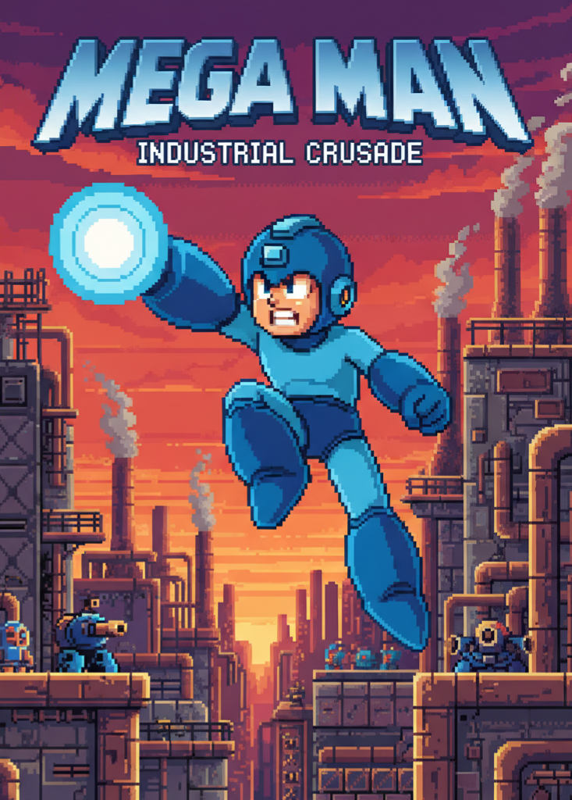

// MEGA MAN //

SATIN AL (10 TL)
Hakkında
Mega Man (Japonya'da Rockman olarak bilinir), Capcom tarafından NES için geliştirilen bir 1987 aksiyon-platform oyunudur. Dr. Wily'nin dünyayı ele geçirme planlarını durdurun!
Sistem Gereksinimleri
| İşletim Sistemi: | PixelOS 3.0 |
| İşlemci: | 8-bit 1.79 MHz |
| Bellek: | 2 KB RAM |
| Depolama: | 256 KB |